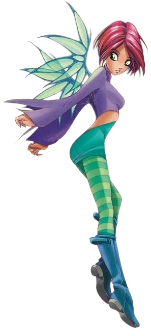
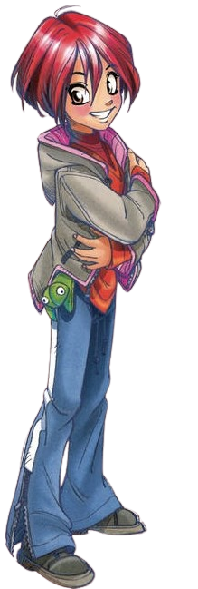

Will Vandom
É a líder da W.I.T.C.H. e mantém o coração de Kandrakar,uma esfera jóia rosa brilhante que converte os cinco elementos em pura energia, permitindo as meninas para transformar e ampliar seus poderes. Will tem o poder de energia absoluta,também conhecida como Quintessence (o poder de manipulação força de vida) e pode ser visto na forma de relâmpagos. Sua cor tema é rosa e seu símbolo é um sinal de igual curva.

